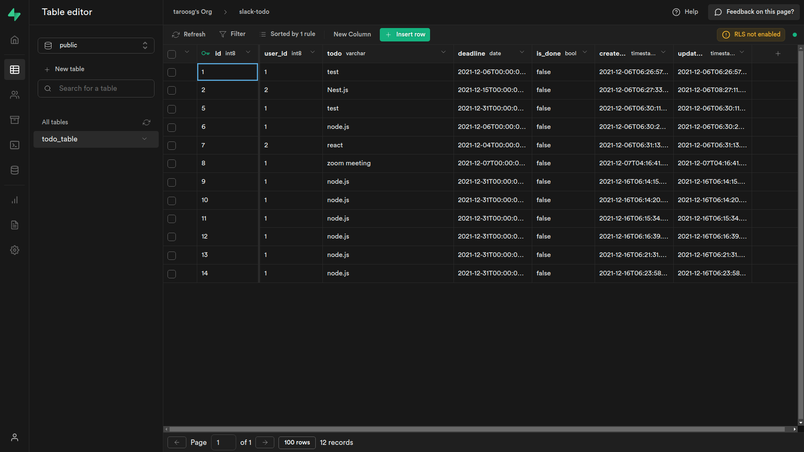

Create の処理
Create 処理の流れ
はじめは Create の処理を実装する．クライアントから送信されたデータを DB に保存する一連の流れを書く．
今回はPOSTメソッドでデータを送信し，新規レコードを作成する．
ルーティングの作成
ルーティングでは，collection 名とデータを受け取り，コントローラにデータを渡す．
// routes/todo.route.js
import express from "express";
// 🔽 編集
import {
readAllTodoData,
createTodoData,
} from "../controllers/todo.controller.js";
export const todoRouter = express.Router();
todoRouter.get("/", (req, res) => readAllTodoData(req, res));
// 🔽 追加
todoRouter.post("/", (req, res) => createTodoData(req, res));
コントローラの作成
コントローラでは，データを整理してサービスに渡す．また，サービスの処理結果を元にレスポンスを返す．
// controllers/todo.controller.js
// 🔽 編集
import { getAllTodoData, insertTodoData } from "../services/todo.service.js";
export const readAllTodoData = async (req, res, next) => {
// 省略
};
// 🔽 追加
export const createTodoData = async (req, res, next) => {
try {
const { todo, deadline, user_id } = req.body;
if (!(todo && deadline && user_id)) {
throw new Error("something is blank");
}
const result = await insertTodoData({
params: { todo: todo, deadline: deadline, user_id: Number(user_id) },
});
return res.status(200).json({
status: 200,
result: result,
message: "Successfully post Todo Data!",
});
} catch (e) {
return res.status(400).json({ status: 400, message: e.message });
}
};
サービスの作成
サービスではロジックが必要な場合は記述するが，今回はデータをそのまま渡すだけ．実際に Supabase にデータを保存する処理は repositories レイヤーに分割する．
// services/todo.service.js
// 🔽 編集
import { findAll, store } from "../repositories/todo.repository.js";
export const getAllTodoData = async () => {
// 省略
};
// 🔽 追加
export const insertTodoData = async ({ params }) => {
try {
return await store({ params });
} catch (e) {
throw Error("Error while posting Todo Data");
}
};
リポジトリの作成
テーブルを指定してデータを保存する処理を実装する．ここで Supabase 関連のコードを記述する必要があるため，関連するコードを import する．
データ永続化に関するコードをリポジトリのレイヤーに閉じ込めることで，DB の種類が変更された場合にもコントローラやサービスのコードに影響ない状態にすることができる．
ポイントは以下のとおり．
-
dotenvで環境変数を読み込む． -
createClientで Supabase との連携を確立する． -
insert()でデータを作成する． -
created_atとupdated_atは Supabase 側で初期値（現在日時）を設定しているため投稿不要．
参考：https://supabase.com/docs/reference/javascript/insert
// repositories/todo.repository.js
import dotenv from "dotenv";
import { createClient } from "@supabase/supabase-js";
dotenv.config();
const supabase = createClient(
process.env.SUPABASE_URL,
process.env.SUPABASE_API_KEY
);
export const findAll = () => {
return { message: "OK" };
};
export const store = async ({ params }) => {
try {
const { data, error } = await supabase.from("todo_table").insert([
{
...params,
is_done: false,
},
]);
return data;
} catch (e) {
throw Error("Error while store Todo Data");
}
};
動作確認
処理を追加したら動作確認する．サーバを再起動して，別ターミナルで下記コマンドでデータを送信し，成功のレスポンスが返ってくれば OK．
$ curl -X POST -H "Content-Type: application/json" -d '{"todo":"node.js","user_id":1,"deadline":"2021-12-31"}' localhost:3000/todo
{
"status": 200,
"result": [
{
"id": 1,
"user_id": 1,
"todo": "node.js",
"deadline": "2021-12-31",
"is_done": false,
"created_at": "2021-12-16T06:21:31.592284+00:00",
"updated_at": "2021-12-16T06:21:31.592284+00:00"
}
],
"message": "Successfully post Todo Data!"
}
また，ブラウザで Supabase のコンソール画面からテーブルにアクセスし，送信したデータが保存されていることを確認しておく．
動作が確認できたら，2-3 件データを入れておこう．日付は本日含め適当に設定して複数件入れておく．
